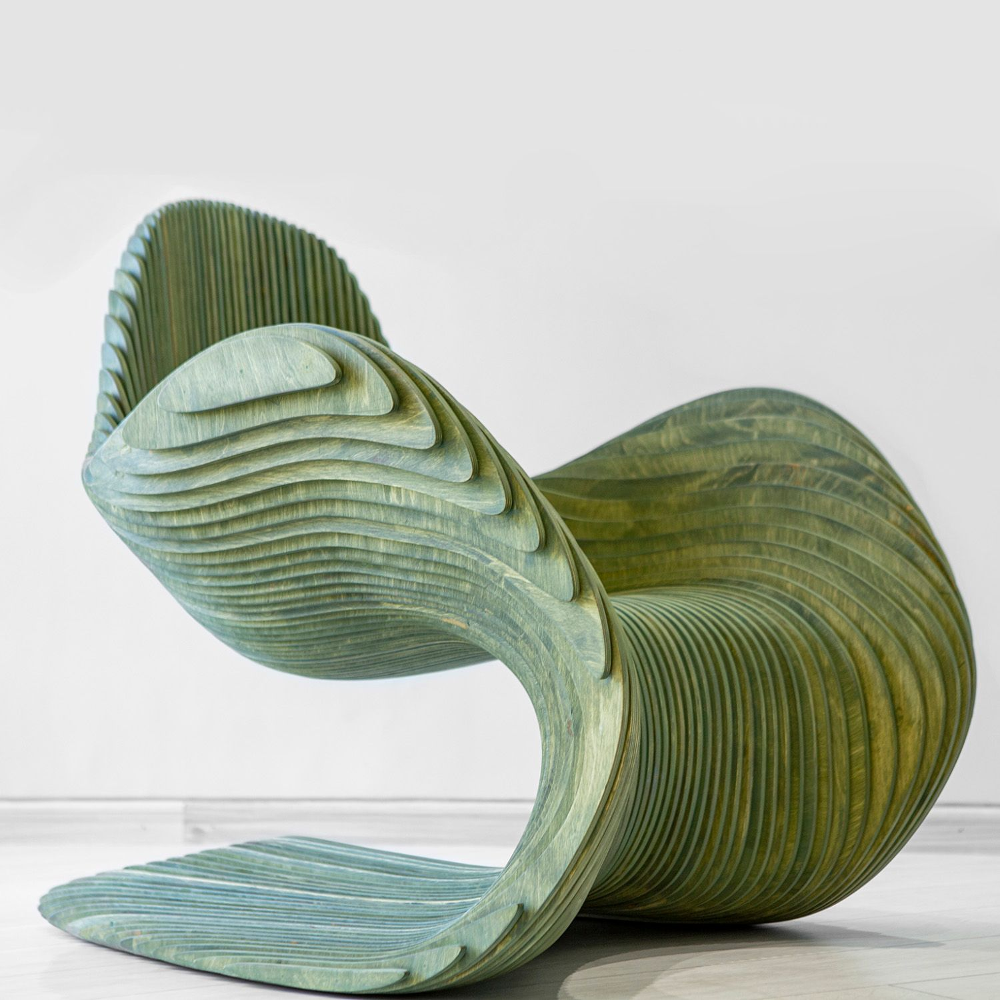
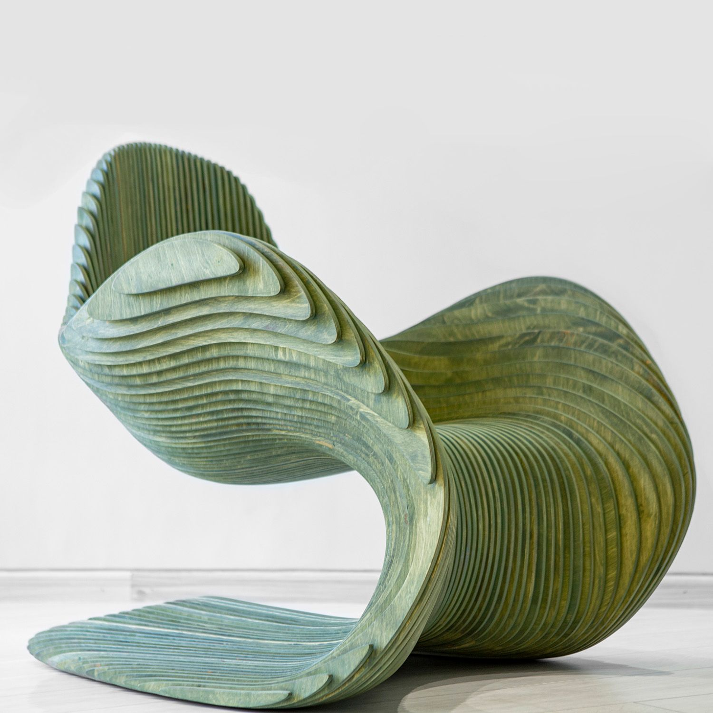

Vadim Klymenko
Parametric Chaise Lounge
Description :Ce fauteuil sculptural est une pièce manifeste du design organique contemporain, flirtant avec les frontières entre mobilier fonctionnel et art pur. Il est conçu pour rompre radicalement avec la conception statique traditionnelle du siège, embrassant une esthétique fluide, biomimétique et cinétique. Sa forme évoque une vague puissante figée en plein mouvement ou des strates géologiques topographiques, invitant le corps à épouser une courbe naturelle et enveloppante qui semble défier la gravité par son porte-à-faux audacieux.
Structure :Il est réalisé grâce à une technique complexe et précise d'empilement de strates de bois (type multiplis ou lamellé-collé), découpées individuellement pour générer le volume progressif. Cette construction en "tranches" crée un rythme visuel hypnotique et une texture striée, soulignés par le contraste entre les faces teintées d'un vert olive profond et les chants clairs du bois qui révèlent le mille-feuille structurel.
Dimensions : H. (Hauteur totale) : 78 cm, L. (Largeur) : 85 cm, P. (Profondeur) : 100 cm.